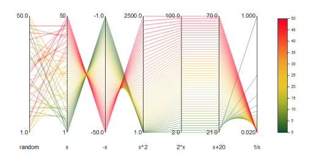
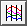
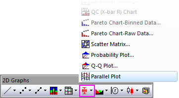
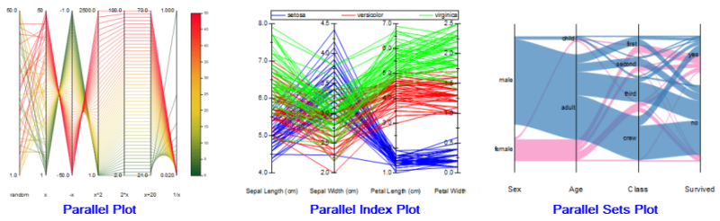

Paralleldiagramm
Parallel-Plot
- 
Datenanforderungen
Wählen Sie mindestens zwei Y-Spalten oder einen Wertebereich aus mindestens zwei Spalten aus. Die Diagrammzuweisung macht keinen Unterschied; ausgewählte Spalten werden wie Y-Spalten behandelt.
Diagramm erstellen
- Wählen Sie die gewünschten Daten aus.
- Wählen Sie Zeichnen > Kategorial: Paralleldiagramm.
oder
- Klicken Sie auf die Schaltfläche Paralleldiagramm  auf der Symbolleiste 2D Grafiken.
- 
Informationen zum benutzerdefinierten Anpassen von Paralleldiagrammen finden Sie unter folgenden Themen:
Vorlage
Parellel.otpu (im EXE-Verzeichnis von Origin installiert)
Hinweise
- Es gibt drei Variationen des Paralleldiagramms:
-
-
- 
- Das einfache Paralleldiagramm (Zeichnen > Kategorial: Paralleldiagramm) zeichnet Variablen auf kontinuierliche (numerische) Skalen und verwendet eine Farbskala für die Diagrammlegende.
- Das Parallelindexdiagramm (Zeichnen > Kategorial: Paralleler Index) zeichnet die Variablen auch auf kontinuierliche Skalen, verwendet aber eine Gruppierungsspalte (eine Spalte der kategorialen Daten), um die Legende zu erstellen und eine Zeichnungsfarbe zuzuweisen.
- Das Parallelsatzdiagramm (Zeichnen > Einfache 2D: Paralleldiagramm: Parallelsätze) zeichnet kategoriale Variablen auf jede Achse.
- Wenn Sie eine Wertespalte per Drag&Drop in ein Paralleldiagramm ziehen, wird die neue Spalte zur letzten hinzugefügt.